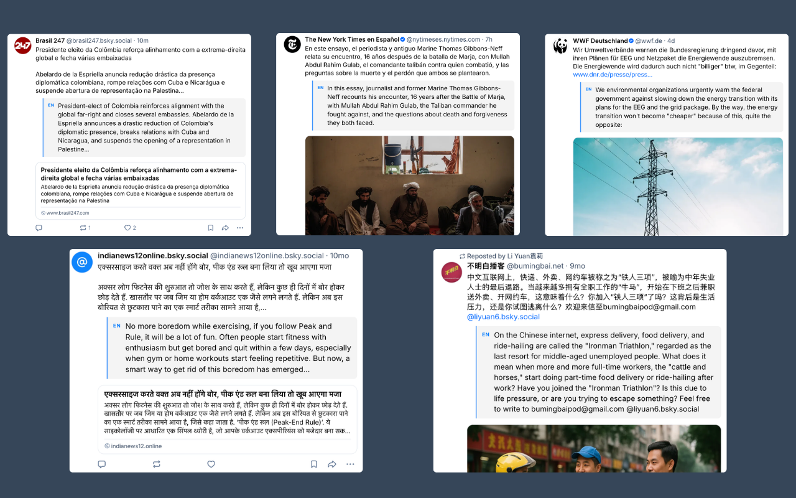
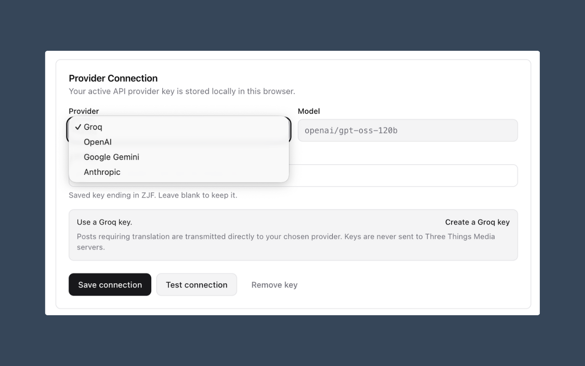
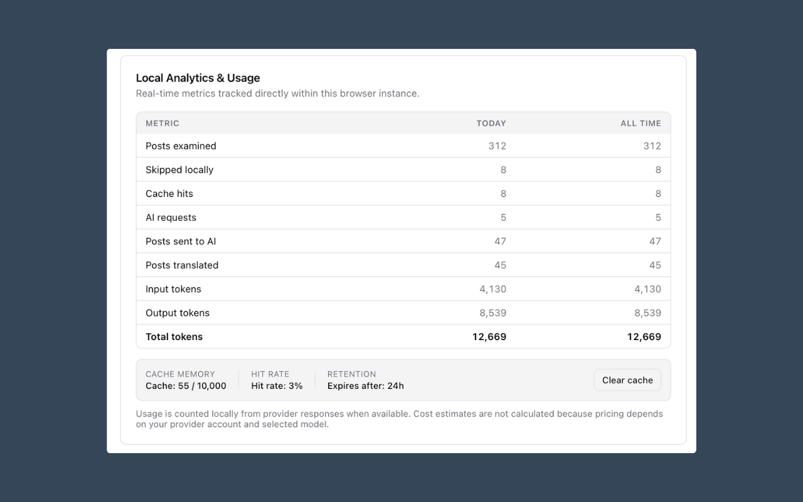

Local-first BYOK
Your provider key, settings, translation cache, and usage counters stay in browser extension storage.
BYOK browser extension for Bluesky
Bluesky Translator places English translation cards beneath non-English posts on bsky.app. It stores settings locally, filters obvious English posts in your browser, and sends only cleaned text directly to the provider you choose.
Inline cards sit below the original post, while Settings keeps provider setup and local usage visible in one tab.



Your provider key, settings, translation cache, and usage counters stay in browser extension storage.
No Three Things Media proxy or hosted translation server. Requests go from your browser to your selected provider.
Groq, OpenAI, Google Gemini, and Anthropic are supported with one active saved provider at a time.
The extension strips URLs and handles, skips obvious English posts, and batches posts that need translation.
Settings show local counters for scanned posts, cache hits, provider requests, and token totals.
Use GitHub Issues for bugs, provider setup problems, feature requests, and documentation fixes.
This repository is for support, release notes, notices, and GitHub Pages.